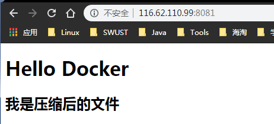

Dockerfile指令详解
我们已经介绍了 FROM，RUN，还提及了 COPY, ADD，其实 Dockerfile 功能很强大，它提供了十多个指令。下面我们继续讲解其他的指令。
练习过程
将index.html打包成project.tar,使用dockerfile将project.tar部署到镜像,解压project.tar,并删除project.tar后,开启容器访问
使用Dockerfile将压缩包导入镜像
准备压缩包里面的html
1 2 <h1 > Hello Docker</h1 > <h2 > 我是压缩后的文件</h2 >
编写dockerfile脚本
1 2 3 4 5 # Dockerfile脚本开始 FROM tomcat WORKDIR /usr/local/tomcat/webapps/ROOT/ RUN rm -fr * COPY project .
测试Dockerfile脚本
1 2 3 4 5 6 7 8 9 10 11 12 13 14 15 16 17 18 cd /usr/local/docker [root@MyCentOS]/usr/local/docker# ls tomcat [root@MyCentOS]/usr/local/docker# cd tomcat [root@MyCentOS]/usr/local/docker/tomcat# ls Dockerfile index.html project.tar [root@MyCentOS]/usr/local/docker/tomcat# docker build -t myproject . Sending build context to Docker daemon 13.82kB Step 1/4 : FROM tomcat ---> 96c4e536d0eb Step 2/4 : WORKDIR /usr/local/tomcat/webapps/ROOT/ ---> Using cache ---> 9350deb03d0d Step 3/4 : RUN rm -fr * ---> Using cache ---> f6814fab3fe4 Step 4/4 : COPY project . COPY failed: stat /var/lib/docker/tmp/docker-builder757135529/project: no such file or directory
报错的原因查看到时project没有写正确应该是project.tar
查看镜像里面的详情
1 2 3 4 [root@MyCentOS]/usr/local/docker/tomcat# docker run -it mydocker bash root@7590d3a9542a:/usr/local/tomcat/webapps/ROOT# ls index.html root@7590d3a9542a:/usr/local/tomcat/webapps/ROOT#
index.html也没有在原本的路径下删除.
重新修改Dockerfile文件.
1 2 3 4 5 6 7 [root@MyCentOS]/usr/local/docker/tomcat# ls Dockerfile index.html project.tar [root@MyCentOS]/usr/local/docker/tomcat# rm index.html [root@MyCentOS]/usr/local/docker/tomcat# ls Dockerfile project.tar [root@MyCentOS]/usr/local/docker/tomcat# vim Dockerfile [root@MyCentOS]/usr/local/docker/tomcat#
再次执行build指令
1 2 3 4 5 6 7 8 9 10 11 12 13 14 15 16 17 18 [root@MyCentOS]/usr/local/docker/tomcat# docker build -t myproject . Sending build context to Docker daemon 12.8kB Step 1/4 : FROM tomcat ---> 96c4e536d0eb Step 2/4 : WORKDIR /usr/local/tomcat/webapps/ROOT/ ---> Using cache ---> 9350deb03d0d Step 3/4 : RUN rm -fr * ---> Using cache ---> f6814fab3fe4 Step 4/4 : COPY project.tar . ---> 3be1d6707ad0 Successfully built 3be1d6707ad0 Successfully tagged myproject:latest [root@MyCentOS]/usr/local/docker/tomcat# docker run -it myproject bash root@3ea53b2ca71a:/usr/local/tomcat/webapps/ROOT# ls project.tar root@3ea53b2ca71a:/usr/local/tomcat/webapps/ROOT#
构建镜像成功,并且交互查看镜像路径下的tar文件存在.
使用Dockerfile指令,解压打包的tar包并且删除tar包
Dockerfile脚本
1 2 3 4 5 6 7 # Dockerfile脚本开始 FROM tomcat WORKDIR /usr/local/tomcat/webapps/ROOT/ RUN rm -fr * COPY project.tar . RUN tar -xf project.tar RUN rm project.tar
执行build构建镜像
1 2 3 4 5 6 7 8 9 10 11 12 13 14 15 16 17 18 19 20 21 22 23 24 [root@MyCentOS]/usr/local/docker/tomcat# docker build -t myproject . Sending build context to Docker daemon 12.8kB Step 1/6 : FROM tomcat ---> 96c4e536d0eb Step 2/6 : WORKDIR /usr/local/tomcat/webapps/ROOT/ ---> Using cache ---> 9350deb03d0d Step 3/6 : RUN rm -fr * ---> Using cache ---> f6814fab3fe4 Step 4/6 : COPY project.tar . ---> Using cache ---> 3be1d6707ad0 Step 5/6 : RUN tar -xf project.tar ---> Running in 89050282e006 Removing intermediate container 89050282e006 ---> e1ca7ee2959d Step 6/6 : RUN rm project.tar ---> Running in 6124469472a5 Removing intermediate container 6124469472a5 ---> 1bb09f348be0 Successfully built 1bb09f348be0 Successfully tagged myproject:latest [root@MyCentOS]/usr/local/docker/tomcat#
查看镜像里面的文件
交互命令
1 2 3 4 [root@MyCentOS]/usr/local/docker/tomcat# docker run -it --rm myproject bash root@c7c2d4feff2c:/usr/local/tomcat/webapps/ROOT# ls index.html root@c7c2d4feff2c:/usr/local/tomcat/webapps/ROOT#
启动镜像容器
1 sudo docker run -p 8081:8080 myproject
查看结果
1 2 3 4 5 6 7 8 9 10 11 12 13 <!DOCTYPE html> <html> <head> <meta charset="UTF-8"> <title>Docker文件测试</title> </head> <body> <h1>Hello Docker</h1> <h2>我是压缩后的文件</h2> </body> </html>
交互方式进入容器查看
1 2 3 4 5 6 7 8 9 10 11 12 13 14 15 16 17 18 19 20 21 22 23 24 25 26 27 28 29 30 31 32 33 34 35 36 37 38 39 40 41 42 43 [root@MyCentOS]/usr/local/docker/tomcat# docker build -t myproject . Sending build context to Docker daemon 12.8kB Step 1/6 : FROM tomcat ---> 96c4e536d0eb Step 2/6 : WORKDIR /usr/local/tomcat/webapps/ROOT/ ---> Using cache ---> 9350deb03d0d Step 3/6 : RUN rm -fr * ---> Using cache ---> f6814fab3fe4 Step 4/6 : COPY project.tar . ---> 2b0dfa7fb134 Step 5/6 : RUN tar -xf project.tar ---> Running in 48de494adfe6 Removing intermediate container 48de494adfe6 ---> 4ae473e72609 Step 6/6 : RUN rm project.tar ---> Running in cb057261565c Removing intermediate container cb057261565c ---> 98cdee09487c Successfully built 98cdee09487c Successfully tagged myproject:latest [root@MyCentOS]/usr/local/docker/tomcat# docker run -it --rm myproject bash root@fff6dea62b52:/usr/local/tomcat/webapps/ROOT# ls index.html root@fff6dea62b52:/usr/local/tomcat/webapps/ROOT# vi bash: vi: command not found root@fff6dea62b52:/usr/local/tomcat/webapps/ROOT# vi index.html bash: vi: command not found root@fff6dea62b52:/usr/local/tomcat/webapps/ROOT# cat index.html <!DOCTYPE html> <html> <head> <meta charset="UTF-8"> <title>Docker文件测试</title> </head> <body> <h1>Hello Docker</h1> <h2>我是压缩后的文件</h2> </body> </html>
查看结果:

指令列表
COPY
ADD
CMD
ENTRYPOINT
ENV
VOLUME
EXPOSE
WORKDIR
COPY
格式：
1 2 3 4 5 6 7 8 9 10 11 12 13 14 15 16 17 18 19 20 21 22 23 24 25 26 27 28 29 30 31 32 33 34 35 36 37 38 39 40 41 42 43 44 45 46 47 48 49 50 51 52 53 54 55 56 57 58 59 60 61 62 63 64 65 66 67 68 69 70 71 72 73 74 75 76 77 78 79 80 81 82 83 84 85 86 87 88 89 90 91 92 93 94 95 96 97 98 99 100 101 102 103 104 105 106 107 108 109 110 111 112 113 114 115 116 117 118 119 120 121 122 123 124 125 126 127 128 129 130 131 132 133 134 135 136 137 138 139 140 141 142 143 144 145 146 147 148 149 150 151 152 COPY <源路径>... <目标路径>COPY ["<源路径1>",... "<目标路径>"] ~~~ 和 RUN 指令一样，也有两种格式，一种类似于命令行，一种类似于函数调用。 COPY 指令将从构建上下文目录中 <源路径> 的文件 / 目录复制到新的一层的镜像内的 <目标路径> 位置。比如： COPY package.json /usr/src/app/ <源路径> 可以是多个，甚至可以是通配符，其通配符规则要满足 Go 的 filepath.Match 规则，如： COPY hom* /mydir/ COPY hom?.txt /mydir/ <目标路径> 可以是容器内的绝对路径，也可以是相对于工作目录的相对路径（工作目录可以用 WORKDIR 指令来指定）。目标路径不需要事先创建，如果目录不存在会在复制文件前先行创建缺失目录。 此外，还需要注意一点，使用 COPY 指令，源文件的各种元数据都会保留。比如读、写、执行权限、文件变更时间等。这个特性对于镜像定制很有用。特别是构建相关文件都在使用 Git 进行管理的时候。 ## ADD ADD 指令和 COPY 的格式和性质基本一致。但是在 COPY 基础上增加了一些功能。 比如 <源路径> 可以是一个 URL，这种情况下，Docker 引擎会试图去下载这个链接的文件放到 <目标路径> 去。下载后的文件权限自动设置为 600，如果这并不是想要的权限，那么还需要增加额外的一层 RUN 进行权限调整，另外，如果下载的是个压缩包，需要解压缩，也一样还需要额外的一层 RUN 指令进行解压缩。所以不如直接使用 RUN 指令，然后使用 wget 或者 curl 工具下载，处理权限、解压缩、然后清理无用文件更合理。因此，这个功能其实并不实用，而且不推荐使用。 如果 <源路径> 为一个 tar 压缩文件的话，压缩格式为 gzip, bzip2 以及 xz 的情况下，ADD 指令将会自动解压缩这个压缩文件到 <目标路径> 去。 在某些情况下，这个自动解压缩的功能非常有用，比如官方镜像 ubuntu 中： FROM scratch ADD ubuntu-xenial-core-cloudimg-amd64-root.tar.gz / ... 但在某些情况下，如果我们真的是希望复制个压缩文件进去，而不解压缩，这时就不可以使用 ADD 命令了。 在 Docker 官方的 Dockerfile 最佳实践文档 中要求，尽可能的使用 COPY，因为 COPY 的语义很明确，就是复制文件而已，而 ADD 则包含了更复杂的功能，其行为也不一定很清晰。最适合使用 ADD 的场合，就是所提及的需要自动解压缩的场合。 另外需要注意的是，ADD 指令会令镜像构建缓存失效，从而可能会令镜像构建变得比较缓慢。 因此在 COPY 和 ADD 指令中选择的时候，可以遵循这样的原则，所有的文件复制均使用 COPY 指令，仅在需要自动解压缩的场合使用 ADD。 ## CMD CMD 指令的格式和 RUN 相似，也是两种格式： shell 格式：CMD <命令> exec 格式：CMD ["可执行文件", "参数1", "参数2"...] 参数列表格式：CMD ["参数1", "参数2"...]。在指定了 ENTRYPOINT 指令后，用 CMD 指定具体的参数。 之前介绍容器的时候曾经说过，Docker 不是虚拟机，容器就是进程。既然是进程，那么在启动容器的时候，需要指定所运行的程序及参数。CMD 指令就是用于指定默认的容器主进程的启动命令的。 在运行时可以指定新的命令来替代镜像设置中的这个默认命令，比如，ubuntu 镜像默认的 CMD 是 /bin/bash，如果我们直接 docker run -it ubuntu 的话，会直接进入 bash。我们也可以在运行时指定运行别的命令，如 docker run -it ubuntu cat /etc/os-release。这就是用 cat /etc/os-release 命令替换了默认的 /bin/bash 命令了，输出了系统版本信息。 在指令格式上，一般推荐使用 exec 格式，这类格式在解析时会被解析为 JSON 数组，因此一定要使用双引号 "，而不要使用单引号。 如果使用 shell 格式的话，实际的命令会被包装为 sh -c 的参数的形式进行执行。比如： CMD echo $HOME 在实际执行中，会将其变更为： CMD [ "sh", "-c", "echo $HOME" ] 这就是为什么我们可以使用环境变量的原因，因为这些环境变量会被 shell 进行解析处理。 提到 CMD 就不得不提容器中应用在前台执行和后台执行的问题。这是初学者常出现的一个混淆。 Docker 不是虚拟机，容器中的应用都应该以前台执行，而不是像虚拟机、物理机里面那样，用 upstart/systemd 去启动后台服务，容器内没有后台服务的概念。 一些初学者将 CMD 写为： CMD service nginx start 然后发现容器执行后就立即退出了。甚至在容器内去使用 systemctl 命令结果却发现根本执行不了。这就是因为没有搞明白前台、后台的概念，没有区分容器和虚拟机的差异，依旧在以传统虚拟机的角度去理解容器。 对于容器而言，其启动程序就是容器应用进程，容器就是为了主进程而存在的，主进程退出，容器就失去了存在的意义，从而退出，其它辅助进程不是它需要关心的东西。 而使用 service nginx start 命令，则是希望 upstart 来以后台守护进程形式启动 nginx 服务。而刚才说了 CMD service nginx start 会被理解为 CMD [ "sh", "-c", "service nginx start"]，因此主进程实际上是 sh。那么当 service nginx start 命令结束后，sh 也就结束了，sh 作为主进程退出了，自然就会令容器退出。 正确的做法是直接执行 nginx 可执行文件，并且要求以前台形式运行。比如： CMD ["nginx", "-g", "daemon off;"] ## ENTRYPOINT ENTRYPOINT 的格式和 RUN 指令格式一样，分为 exec 格式和 shell 格式。 ENTRYPOINT 的目的和 CMD 一样，都是在指定容器启动程序及参数。ENTRYPOINT 在运行时也可以替代，不过比 CMD 要略显繁琐，需要通过 docker run 的参数 --entrypoint 来指定。 当指定了 ENTRYPOINT 后，CMD 的含义就发生了改变，不再是直接的运行其命令，而是将 CMD 的内容作为参数传给 ENTRYPOINT 指令，换句话说实际执行时，将变为： <ENTRYPOINT> "<CMD>" 那么有了 CMD 后，为什么还要有 ENTRYPOINT 呢？这种 <ENTRYPOINT> "<CMD>" 有什么好处么？让我们来看几个场景。 ## 场景一：让镜像变成像命令一样使用 假设我们需要一个得知自己当前公网 IP 的镜像，那么可以先用 CMD 来实现： FROM ubuntu:16.04 RUN apt-get update \ && apt-get install -y curl \ && rm -rf /var/lib/apt/lists/* CMD [ "curl", "-s", "http://ip.cn" ] 假如我们使用 docker build -t myip . 来构建镜像的话，如果我们需要查询当前公网 IP，只需要执行： $ docker run myip 当前 IP：61.148.226.66 来自：北京市 联通 嗯，这么看起来好像可以直接把镜像当做命令使用了，不过命令总有参数，如果我们希望加参数呢？比如从上面的 CMD 中可以看到实质的命令是 curl，那么如果我们希望显示 HTTP 头信息，就需要加上 -i 参数。那么我们可以直接加 -i 参数给 docker run myip 么？ $ docker run myip -i docker: Error response from daemon: invalid header field value "oci runtime error: container_linux.go:247: starting container process caused \"exec: \\\"-i\\\": executable file not found in $PATH\"\n". 我们可以看到可执行文件找不到的报错，executable file not found。之前我们说过，跟在镜像名后面的是 command，运行时会替换 CMD 的默认值。因此这里的 -i 替换了原来的 CMD，而不是添加在原来的 curl -s http://ip.cn 后面。而 -i 根本不是命令，所以自然找不到。 那么如果我们希望加入 -i 这参数，我们就必须重新完整的输入这个命令： $ docker run myip curl -s http://ip.cn -i 这显然不是很好的解决方案，而使用 ENTRYPOINT 就可以解决这个问题。现在我们重新用 ENTRYPOINT 来实现这个镜像： FROM ubuntu:16.04 RUN apt-get update \ && apt-get install -y curl \ && rm -rf /var/lib/apt/lists/* ENTRYPOINT [ "curl", "-s", "http://ip.cn" ] 这次我们再来尝试直接使用 docker run myip -i： $ docker run myip 当前 IP：61.148.226.66 来自：北京市 联通 $ docker run myip -i HTTP/1.1 200 OK Server: nginx/1.8.0 Date: Tue, 22 Nov 2016 05:12:40 GMT Content-Type: text/html; charset=UTF-8 Vary: Accept-Encoding X-Powered-By: PHP/5.6.24-1~dotdeb+7.1 X-Cache: MISS from cache-2 X-Cache-Lookup: MISS from cache-2:80 X-Cache: MISS from proxy-2_6 Transfer-Encoding: chunked Via: 1.1 cache-2:80, 1.1 proxy-2_6:8006 Connection: keep-alive 当前 IP：61.148.226.66 来自：北京市 联通 可以看到，这次成功了。这是因为当存在 ENTRYPOINT 后，CMD 的内容将会作为参数传给 ENTRYPOINT，而这里 -i 就是新的 CMD，因此会作为参数传给 curl，从而达到了我们预期的效果。 ## 场景二：应用运行前的准备工作 启动容器就是启动主进程，但有些时候，启动主进程前，需要一些准备工作。 比如 mysql 类的数据库，可能需要一些数据库配置、初始化的工作，这些工作要在最终的 mysql 服务器运行之前解决。 此外，可能希望避免使用 root 用户去启动服务，从而提高安全性，而在启动服务前还需要以 root 身份执行一些必要的准备工作，最后切换到服务用户身份启动服务。或者除了服务外，其它命令依旧可以使用 root 身份执行，方便调试等。 这些准备工作是和容器 CMD 无关的，无论 CMD 为什么，都需要事先进行一个预处理的工作。这种情况下，可以写一个脚本，然后放入 ENTRYPOINT 中去执行，而这个脚本会将接到的参数（也就是 <CMD>）作为命令，在脚本最后执行。比如官方镜像 redis 中就是这么做的： FROM alpine:3.4 ... RUN addgroup -S redis && adduser -S -G redis redis ... ENTRYPOINT ["docker-entrypoint.sh"] EXPOSE 6379 CMD [ "redis-server" ] 可以看到其中为了 redis 服务创建了 redis 用户，并在最后指定了 ENTRYPOINT 为 docker-entrypoint.sh 脚本。 ## !/bin/sh
…
allow the container to be started with --user
if [ “$1” = ‘redis-server’ -a “$(id -u)” = ‘0’ ]; then
exec “$@”
该脚本的内容就是根据 CMD 的内容来判断，如果是 redis-server 的话，则切换到 redis 用户身份启动服务器，否则依旧使用 root 身份执行。比如：
$ docker run -it redis id
uid=0(root) gid=0(root) groups=0(root)
## ENV
格式有两种：
ENV <key> <value>
ENV <key1>=<value1> <key2>=<value2>...
这个指令很简单，就是设置环境变量而已，无论是后面的其它指令，如 RUN，还是运行时的应用，都可以直接使用这里定义的环境变量。
ENV VERSION=1.0 DEBUG=on \
NAME="Happy Feet"
这个例子中演示了如何换行，以及对含有空格的值用双引号括起来的办法，这和 Shell 下的行为是一致的。
定义了环境变量，那么在后续的指令中，就可以使用这个环境变量。比如在官方 node 镜像 Dockerfile 中，就有类似这样的代码：
ENV NODE_VERSION 7.2.0
RUN curl -SLO "https://nodejs.org/dist/v$NODE_VERSION/node-v$NODE_VERSION-linux-x64.tar.xz" \
&& curl -SLO "https://nodejs.org/dist/v$NODE_VERSION/SHASUMS256.txt.asc" \
&& gpg --batch --decrypt --output SHASUMS256.txt SHASUMS256.txt.asc \
&& grep " node-v$NODE_VERSION-linux-x64.tar.xz\$" SHASUMS256.txt | sha256sum -c - \
&& tar -xJf "node-v$NODE_VERSION-linux-x64.tar.xz" -C /usr/local --strip-components=1 \
&& rm "node-v$NODE_VERSION-linux-x64.tar.xz" SHASUMS256.txt.asc SHASUMS256.txt \
&& ln -s /usr/local/bin/node /usr/local/bin/nodejs
在这里先定义了环境变量 NODE_VERSION，其后的 RUN 这层里，多次使用 $NODE_VERSION 来进行操作定制。可以看到，将来升级镜像构建版本的时候，只需要更新 7.2.0 即可，Dockerfile 构建维护变得更轻松了。
下列指令可以支持环境变量展开： ADD、COPY、ENV、EXPOSE、LABEL、USER、WORKDIR、VOLUME、STOPSIGNAL、ONBUILD。
可以从这个指令列表里感觉到，环境变量可以使用的地方很多，很强大。通过环境变量，我们可以让一份 Dockerfile 制作更多的镜像，只需使用不同的环境变量即可。
## VOLUME
格式为：
VOLUME ["<路径1>", "<路径2>"...]
VOLUME <路径>
之前我们说过，容器运行时应该尽量保持容器存储层不发生写操作，对于数据库类需要保存动态数据的应用，其数据库文件应该保存于卷 (volume) 中，后面的章节我们会进一步介绍 Docker 卷的概念。为了防止运行时用户忘记将动态文件所保存目录挂载为卷，在 Dockerfile 中，我们可以事先指定某些目录挂载为匿名卷，这样在运行时如果用户不指定挂载，其应用也可以正常运行，不会向容器存储层写入大量数据。
VOLUME /data
这里的 /data 目录就会在运行时自动挂载为匿名卷，任何向 /data 中写入的信息都不会记录进容器存储层，从而保证了容器存储层的无状态化。当然，运行时可以覆盖这个挂载设置。比如：
docker run -d -v mydata:/data xxxx
在这行命令中，就使用了 mydata 这个命名卷挂载到了 /data 这个位置，替代了 Dockerfile 中定义的匿名卷的挂载配置。
## EXPOSE
格式为 EXPOSE <端口1> [<端口2>...]。
EXPOSE 指令是声明运行时容器提供服务端口，这只是一个声明，在运行时并不会因为这个声明应用就会开启这个端口的服务。在 Dockerfile 中写入这样的声明有两个好处，一个是帮助镜像使用者理解这个镜像服务的守护端口，以方便配置映射；另一个用处则是在运行时使用随机端口映射时，也就是 docker run -P 时，会自动随机映射 EXPOSE 的端口。
此外，在早期 Docker 版本中还有一个特殊的用处。以前所有容器都运行于默认桥接网络中，因此所有容器互相之间都可以直接访问，这样存在一定的安全性问题。于是有了一个 Docker 引擎参数 --icc=false，当指定该参数后，容器间将默认无法互访，除非互相间使用了 --links 参数的容器才可以互通，并且只有镜像中 EXPOSE 所声明的端口才可以被访问。这个 --icc=false 的用法，在引入了 docker network 后已经基本不用了，通过自定义网络可以很轻松的实现容器间的互联与隔离。
要将 EXPOSE 和在运行时使用 -p <宿主端口>:<容器端口> 区分开来。-p，是映射宿主端口和容器端口，换句话说，就是将容器的对应端口服务公开给外界访问，而 EXPOSE 仅仅是声明容器打算使用什么端口而已，并不会自动在宿主进行端口映射。
## WORKDIR
格式为 WORKDIR <工作目录路径>。
使用 WORKDIR 指令可以来指定工作目录（或者称为当前目录），以后各层的当前目录就被改为指定的目录，如该目录不存在，WORKDIR 会帮你建立目录。
之前提到一些初学者常犯的错误是把 Dockerfile 等同于 Shell 脚本来书写，这种错误的理解还可能会导致出现下面这样的错误：
RUN cd /app
RUN echo "hello" > world.txt
如果将这个 Dockerfile 进行构建镜像运行后，会发现找不到 /app/world.txt 文件，或者其内容不是 hello。原因其实很简单，在 Shell 中，连续两行是同一个进程执行环境，因此前一个命令修改的内存状态，会直接影响后一个命令；而在 Dockerfile 中，这两行 RUN 命令的执行环境根本不同，是两个完全不同的容器。这就是对 Dockerfile 构建分层存储的概念不了解所导致的错误。
之前说过每一个 RUN 都是启动一个容器、执行命令、然后提交存储层文件变更。第一层 RUN cd /app 的执行仅仅是当前进程的工作目录变更，一个内存上的变化而已，其结果不会造成任何文件变更。而到第二层的时候，启动的是一个全新的容器，跟第一层的容器更完全没关系，自然不可能继承前一层构建过程中的内存变化。
因此如果需要改变以后各层的工作目录的位置，那么应该使用 WORKDIR 指令。
## 参考文档
> https://www.bilibili.com/video/av29384041/?p=37
> https://www.funtl.com/zh/docker/Docker-%E6%93%8D%E4%BD%9C-Docker-%E5%AE%B9%E5%99%A8.html